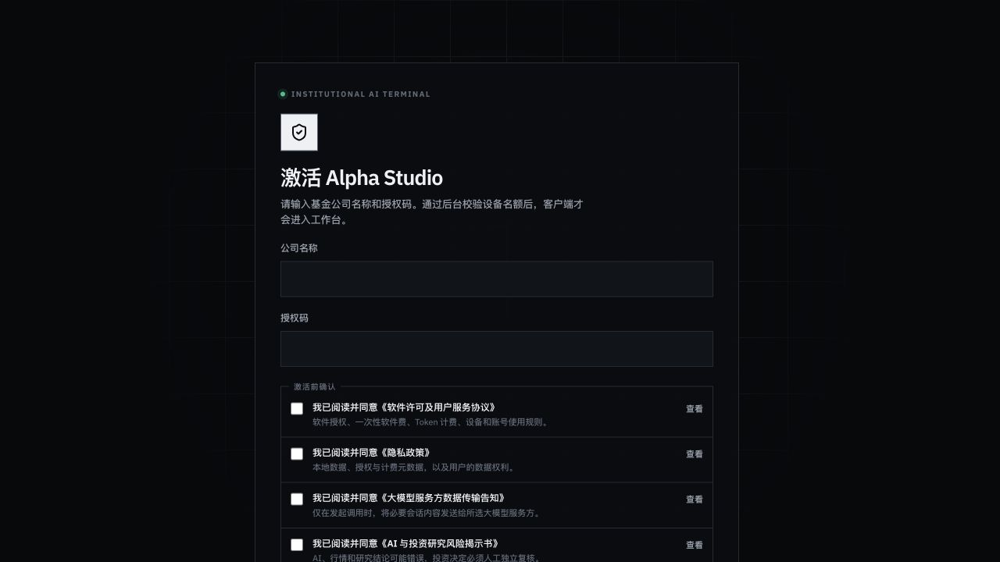
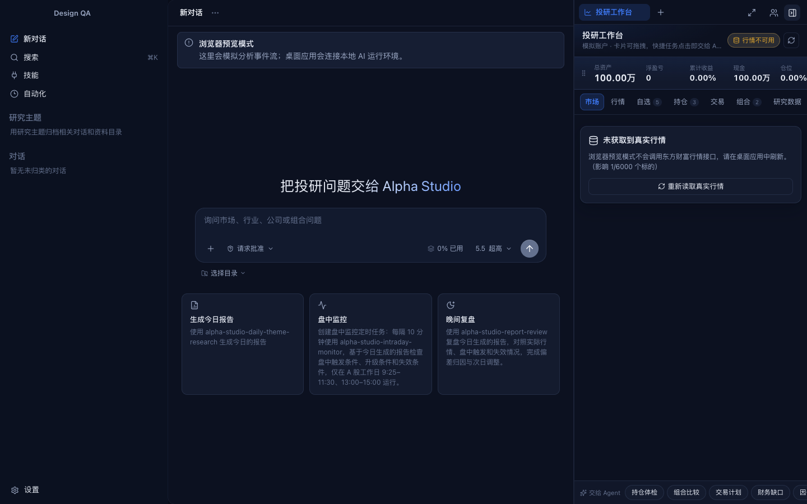
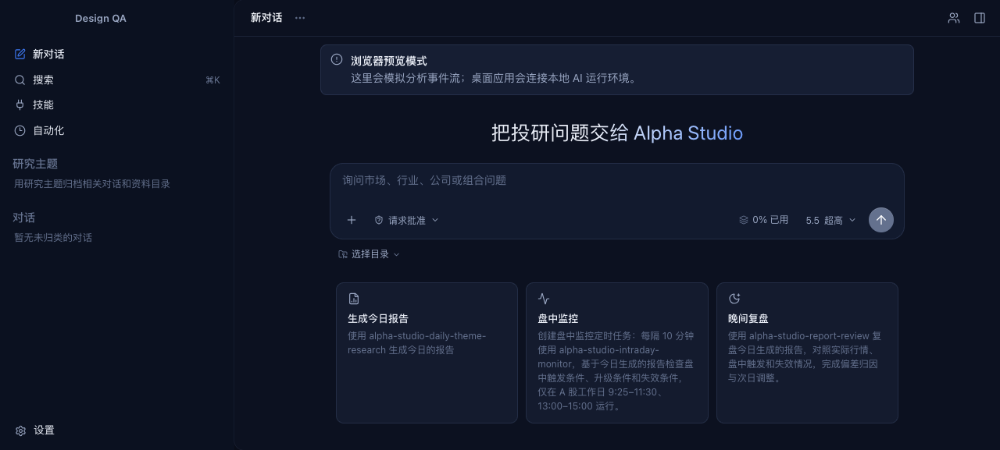
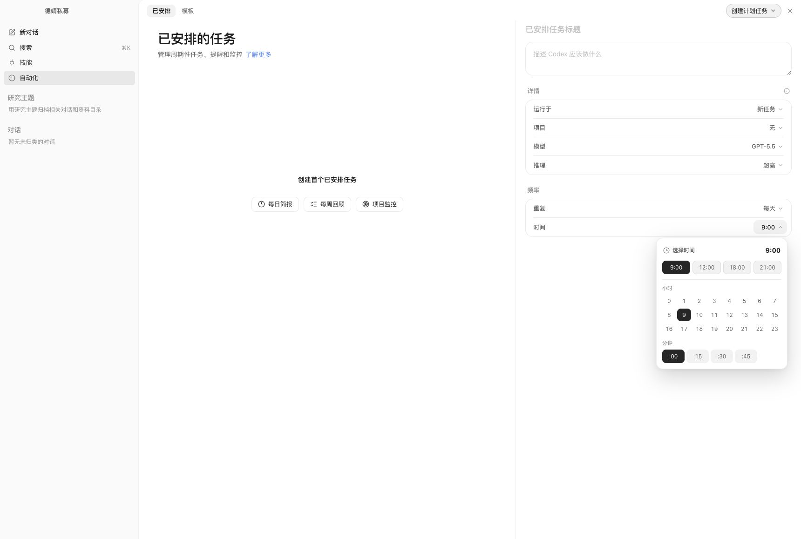
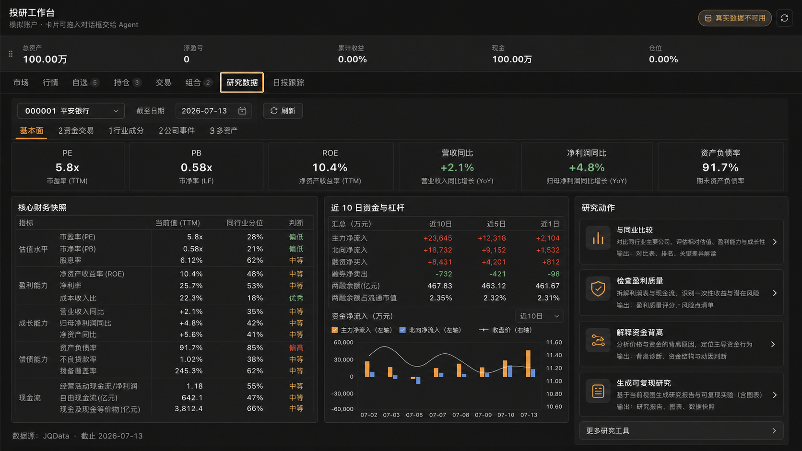
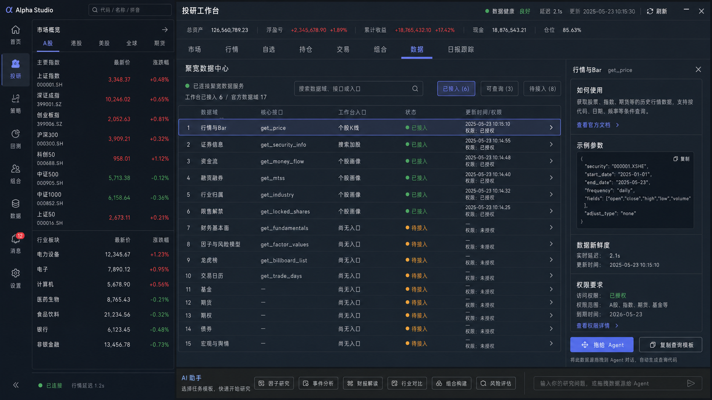

研究员、基金经理、运营与管理员
本手册覆盖客户从首次启动到日常投研、数据管理和故障报修的完整路径。管理员可重点阅读激活、设备、计费和备份章节。
面向金融投研团队的安装、激活、研究主题管理、AI 协作、自动化、行情与研究数据、风险控制及运维指南。
本手册覆盖客户从首次启动到日常投研、数据管理和故障报修的完整路径。管理员可重点阅读激活、设备、计费和备份章节。
截图来自 0.1.x 演示环境。模型列表、数据源、工作台标签和企业名称以实际授权及后台配置为准。
例如 设置 › 账户与授权 › 设备管理。按钮名使用粗体；风险、数据时点和人工复核要求用提示框标出。
软件用于研究辅助，不替代投资决策、合规审查或真实交易授权；任何证券结论均须独立核验。
| 项目 | 建议 |
|---|---|
| 设备 | 受支持的 macOS 客户端设备 |
| 网络 | 首次激活、授权续租、模型与行情服务需联网 |
| 磁盘 | 为项目资料、附件、日志及备份预留空间 |
| 权限 | 按需允许访问所选项目目录；不要授予无关目录 |
最近一次在线校验成功后的授权可在有效期内继续使用。超过五天通常需要重新联网校验；具体以客户授权策略为准。

1 2 3
演示环境 · 深色主题 1 2 3 4 5| 目录 | 内容 | 建议 |
|---|---|---|
00_研究计划 | 问题定义、假设、数据需求 | 先写研究边界 |
01_原始资料 | 公告、研报、表格、会议纪要 | 保留来源和日期 |
02_分析过程 | 中间表、脚本、笔记 | 不要覆盖原始数据 |
03_交付成果 | 最终报告、图表、归档包 | 区分草稿与发布版 |
请在【数据时点】基础上，对【对象】完成【任务】，优先使用【资料/来源】，输出【格式】，并明确区分事实、推断与待核验项。
要求“结论—依据—风险—行动”结构，便于快速决策。
行情、估值、政策与财务数据必须注明截至日期。
让模型给出失效条件，避免只收集支持性证据。

演示环境 1 2 3 4技能把研究方法、数据要求、输出结构和质检规则封装为可复用流程。进入左侧技能，搜索并查看详情；也可从首页任务卡直接启用。
生成主题、标的、催化、触发和失效条件。
综合政策、产业投入、机构资金与海外景气。
按规则检查触发、升级、失效和数据缺口。
对照实际行情，记录误差、证据与次日调整。
优先一手来源，分离事实与推断，保留冲突。
维护逻辑、指标、估值、催化、风险与失效版本。
用 Brier 分数和可靠性分桶复盘预测偏差。
候选、批量计算、验证、去冗余与组合搜索。

演示租户 1 2 3 4指数、板块、涨跌、成交活跃度、主题与事件入口。
价格、K 线、成交、估值和公司信息；注意行情来源与时点。
按主题维护标的，支持将观察对象拖入对话发起研究。
查看仓位、成本、盈亏与集中度，作为组合研究上下文。

功能说明图 · 演示数据 1 2 3 4
功能说明图 · 权限以实际账号为准| 标签 | 用途 |
|---|---|
| 今日摘要 | 汇总主题、建议、风险与待办 |
| 主题 | 选择主题与股票池，查看层级和条件 |
| 联合研判 | 多角色研究，保留分歧与数据缺口 |
| 建议卡 | 记录倾向、优先级、触发与失效条件 |
| 跟踪验证 | 进入今日作战、台账、复盘、回测和校准 |
HTML 可在内置浏览器预览；PDF 可在阅读器中查看。预览不代表最终发布审核已通过。
request_id。| 场景 | 动作 |
|---|---|
| 新设备 | 使用公司名称与授权码激活，占用一个设备名额 |
| 设备遗失 | 管理员立即撤销设备，并退出模型服务账号 |
| 人员离职 | 撤销设备、账号授权和数据目录访问权限 |
| 设备转让 | 备份后清理本地资料，再由管理员重新分配 |
| 授权失效 | 恢复网络、重启并重新校验；保留错误文字 |
| 现象 | 先检查 | 处理建议 |
|---|---|---|
| 授权已失效 | 网络、系统时间、设备是否被撤销 | 恢复网络并重新打开；仍失败时提供公司名、设备名、错误文字和 request_id。 |
| 模型不可用 | 本地 AI 环境、账号登录、模型授权和余额 | 进入账户与授权刷新状态；通过服务方官方页面重新登录，不向他人发送验证码。 |
| 无法发送任务 | 是否选择模型、目录是否可访问、输入是否为空 | 重新选择目录与模型；降低附件数量；确认批准对话框未被遮挡。 |
| 行情或数据为空 | 数据源状态、交易日、账号权限、网络 | 点击刷新；核对截止日期；检查聚宽配置及权限，保留原始错误。 |
| 自动化未运行 | 任务是否启用、时间/频率、项目和模型 | 检查最近运行记录；确认设备在线、应用环境可用且任务未被暂停。 |
| 目录或文件打不开 | 路径是否移动、磁盘是否挂载、访问权限 | 在 Finder 中确认路径；重新绑定目录；从备份恢复，不要直接覆盖唯一副本。 |
| 计费对不上 | 时间、模型、Token、实际用量与扣费流水 | 导出或记录账本条目及 request_id，联系服务人员核对更正流水。 |
不会自动整体上传。项目和会话默认在本机；你主动发起模型调用时，完成请求所需的上下文会发送给所选模型服务方。
不可以。使用官方页面登录；不要提供密码、验证码、Cookie、Token、恢复码或本地授权文件。
不会。工作台交易用于模拟研究和复盘，不代表实盘连接或真实委托。
可以使用本地资料、公开来源和其他已授权能力；但依赖聚宽字段的功能会提示缺失或权限不足。
常规升级通常保留数据，但任何升级前都应备份。卸载也不一定删除所有本地文件。
立即联系管理员撤销对应设备，同时退出模型服务账号并按机构流程处理本地数据风险。
模型、输入上下文、附件规模、输出长度和推理强度都会影响 Token 与费用。
需先核验来源、时点、假设、反证和合规口径，再由有权限人员复核并承担最终责任。
从可追溯的证据开始，
以可验证的决策结束。